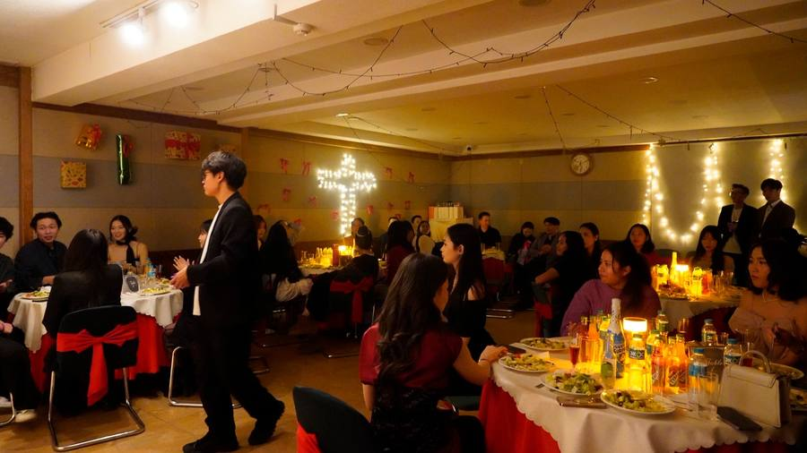
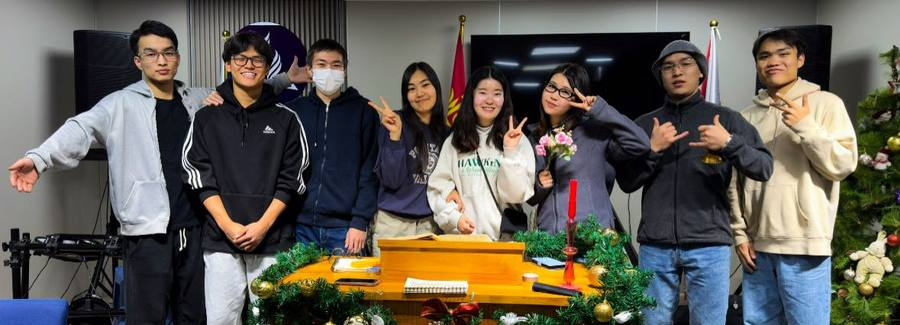
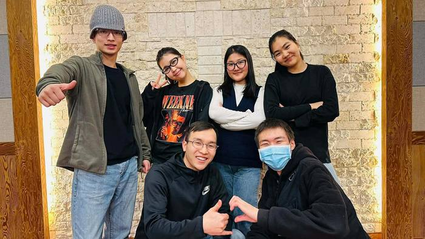
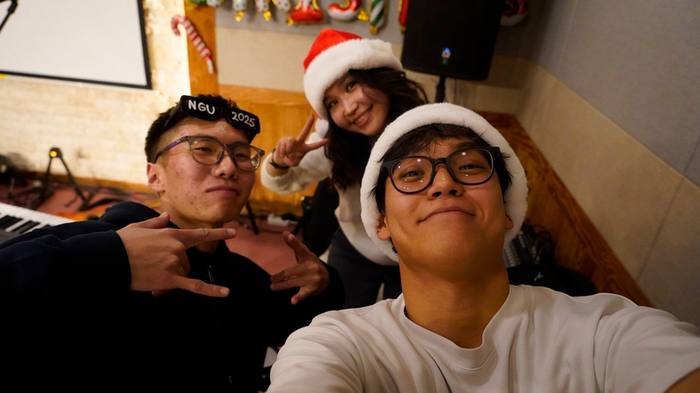
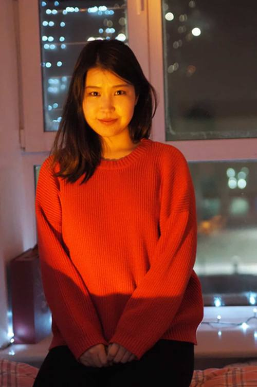
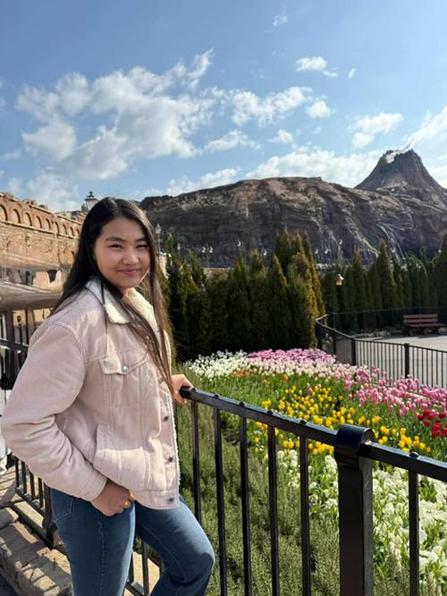
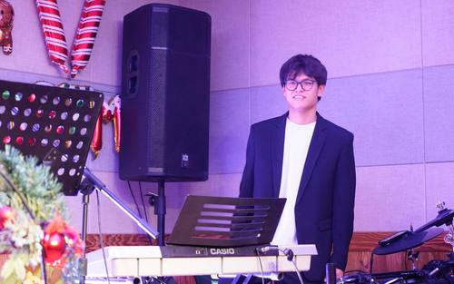
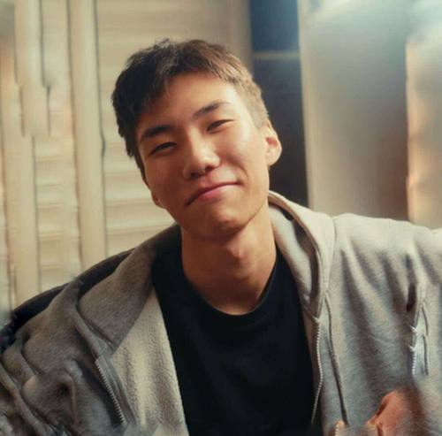
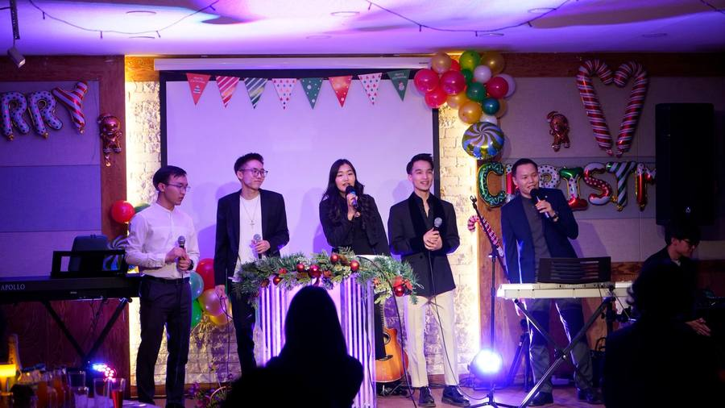

Next Generation Union
Итгэл, ариун сүнсээр нэгдсэн сайн дурын залуучуудын үйлчлэл.
Оюутан, залуусын оролцоонд тулгуурласан төрийн бус байгууллагын хувьд судалгаа шинжилгээ, төсөл хөтөлбөрийг үр нөлөөтэйгээр хэрэгжүүлж, залуусын манлайллыг хөгжүүлэхийн зэрэгцээ өөрсдийн хүрээлэлд төдийгүй нийгэмд эерэг өөрчлөлт авчрах жишиг байгууллага болно.

NGU · цуглаан
Итгэл үнэмшил, манлайлал, нийгмийн үнэ цэнийг нэг дор
Залуусыг үйлчлэл болон нийгмийн оролцоонд уриалан манлайллыг нь хөгжүүлэхийн зэрэгцээ нийгмийн бодит хэрэгцээнд нийцсэн, Адвентист үнэт зүйлд суурилсан урт хугацаанд үр өгөөжтэй ажлын байрыг судалгаа, төсөл хөтөлбөрөөр дамжуулан хөгжүүлж, Адвентист залуусын хөдөлмөр эрхлэлтийг дэмжинэ. Мөн Адвентист залуусыг нэг зорилго, үнэт зүйл дор нэгтгэн чадавхжуулж, улмаар Адвентист чуулганы ирээдүйн хөгжил, нийгэмд үзүүлэх эерэг нөлөөлөлд бодит хувь нэмэр оруулна.
Үйл ажиллагааны 5 чиглэл
Төсөл хөтөлбөрөөс эхлээд аялал жуулчлал хүртэл — NGU дараах таван чиглэлээр залуусыг нэгтгэн ажилладаг.
Төсөл хөтөлбөр
Нийгмийн хөгжлийн чиглэлээр судалгаа, төсөл хэрэгжүүлж, боловсрол, байгаль орчин, хүүхдийн эрхийн хамгаалал, залуучуудын оролцоог нэмэгдүүлэх санаачлагыг олон улсын болон дотоодын байгууллагуудтай хамтран өрнүүлнэ.
Соёл, урлаг, спорт
Урлаг, соёл, спортын үйл ажиллагааг зохион байгуулж, залуусын бүтээлч сэтгэлгээ, бие бялдрын хөгжил, хамтын ажиллагааг дэмжинэ.
Мультимедиа, маркетинг
Мультимедиа болон маркетингийн үйл ажиллагаагаар байгууллагын үнэт зүйл, төсөл хөтөлбөр, арга хэмжээг олон нийтэд түгээж, залуусын бүтээлч оролцоог дэмжинэ.
Эвент, арга хэмжээ
Нийгэмд нөлөөлөх, хамтын ажиллагааг бэхжүүлэх, байгууллагын үнэт зүйл, төслүүдийг олон нийтэд сурталчлах эвент, үйл ажиллагааг зохион байгуулна.
Аялал, жуулчлал
Байгаль, соёлын өв, нийгмийн сайн сайхныг дэмжих аялал жуулчлалын төсөл хэрэгжүүлж, оюутан залуусыг хамтран ажиллах, багийн туршлага хөгжүүлэх боломжтой орчинд оролцуулна.
Давуу тал

Олон талт хамт олон
Төрөл бүрийн мэргэжил, салбарын туршлагатай залуусыг нэгтгэсэн, сүм, сүмийн төлөөлөлтэй олон талт баг.
Нэг зорилго, нэг үнэт зүйл
Өөрсдийн чиглэл, хүсэл мөрөөдөл, ур чадвараа хөгжүүлэн, нийгэмд эерэг хувь нэмэр оруулах зорилготой нэг баг, хамт олон.

Залуу эрч хүч, шинэ санаа
Залуу насны бүтээлч сэтгэлгээ, эрч хүч, шинэ санаа, технологи, орчин үеийн арга барилыг хуримтлуулан ашиглах чадвар.
“NGU” гэр бүл
Маркетингээс эхлээд барилгын инженер, тогооч хүртэл — өөр өөрийн мэргэжлээрээ, нэг зорилгын төлөө хамтарсан хамт олон.

Б. Сэргэлэн

Ц. Уранбилэг
М. Булганзаяа

Н. Цэлмэн

С. Түвшинжаргал

Э. Сайхан-Учрал
Сүүлийн нийтлэл
Үйл ажиллагаа, арга хэмжээ, ойрын төлөвлөгөөний талаарх сүүлийн үеийн нийтлэл.

Дараагийн үеийг хамтдаа бүтээцгээе
Та ч бас өөрийн мэргэжил, авьяас, санаагаараа NGU-ийн хамт олонд нэмэр болж чадна. Асуулт, санал, хамтын ажиллагааны талаар бидэнтэй нэгдээрэй.